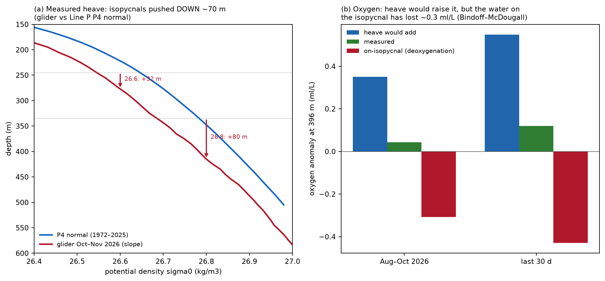
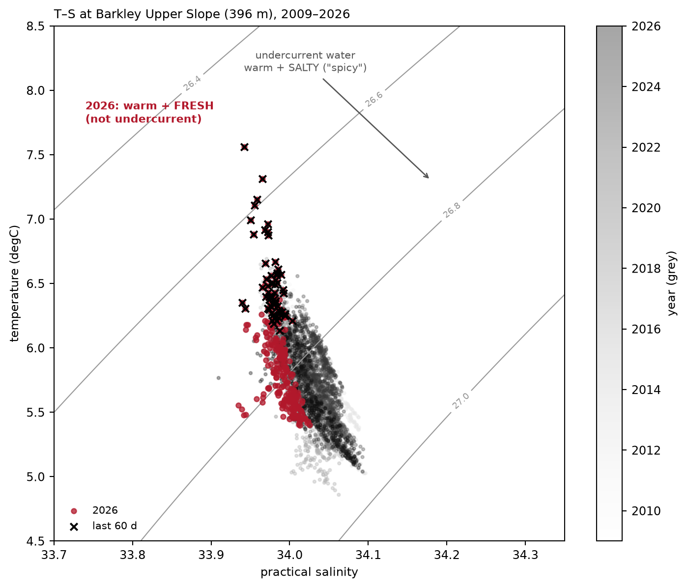
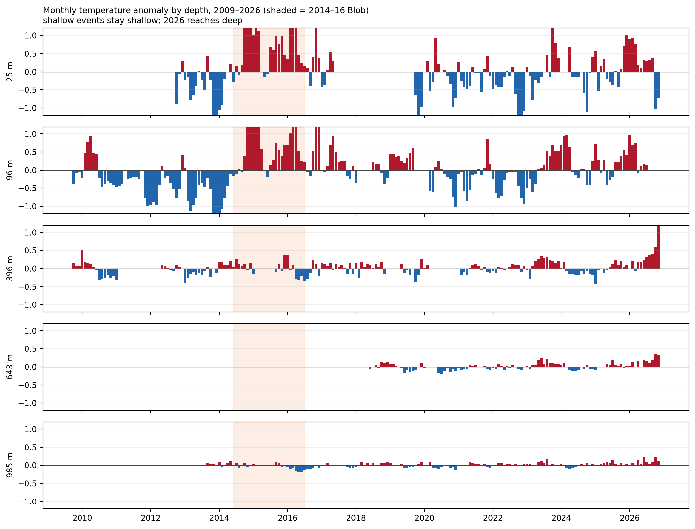

Ocean Networks Canada cabled records, SW Vancouver Island. Snapshot 2026-11 (the GitHub Action refreshes this weekly). RONI ASO 2026 = 1.97.
| Site | Depth | Temperature anomaly | Oxygen anomaly |
|---|---|---|---|
| Folger Pinnacle | 25 m | -1.08 (-1.3 sd, cold) | -0.06 (normal) |
| Barkley Upper Slope | 396 m | +0.71 (+3.3 sd, rising) | +0.12 (+0.8 sd, rising) |
| Barkley Node | 643 m | +0.37 (+3.0 sd, rising) | +0.18 (+3.5 sd, record) |
| Barkley Canyon Axis | 985 m | +0.24 (+2.6 sd, rising) | -0.03 (-1.7 sd, low) |

Red above zero = warmer / more oxygen than normal for the date. The El Nino shows at depth first.
Two ways to measure the push, plus a direct glider measurement. Density and temperature agree, so the 396 m salinity is not badly drifting. Oxygen is the exception: heave should have raised it, but much less was measured.
| Quantity (last 30 days, 396 m) | Value |
|---|---|
| heave from density | +107 m |
| heave from temperature | +123 m |
| glider-measured (23 Oct – 26 Nov 2026) | sigma 26.8 at 405 m vs 335 m normal = +70 m |
| oxygen: heave would add | +0.55 ml/L |
| oxygen: measured | +0.12 ml/L |
| oxygen: on-isopycnal change (deoxygenation) | -0.43 ml/L |


Undercurrent water is warm and SALTY; 2026 is warm and FRESH.

2014-16 (Blob) was shallow; 2026 reaches deep - record-building at 396 and 643 m.